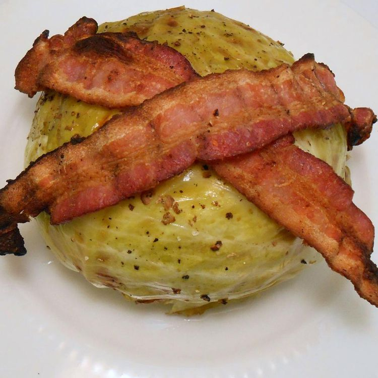

Grilled Cabbage
Homepage
Pan Fried Asparagus
Sweet Potato Wedges with Rosemary-Orange Brown Butter

Description
Grilled cabbage with a bacon twist is now our favorite summer side. I like to use peppered bacon, so I don't pepper my cabbage; it's up to you.
Ingredients
- 1 head cabbage, cored
- 1 tablespoon butter
- salt and ground black pepper to taste
- 1 pound bacon
Steps
- Preheat an outdoor grill for medium-high heat and lightly oil the grate.
- Fill the hole created from coring the cabbage with butter, salt, and pepper. Roll bacon slices and stuff into hole in cabbage. Lay any leftover bacon slices over top of cabbage. Wrap the whole cabbage in aluminum foil.
- Cook cabbage on preheated grill until tender, 45 to 50 minutes. Remove bacon from cabbage and cook on the grill until crisp, 5 to 7 minutes; crumble and sprinkle over cabbage.